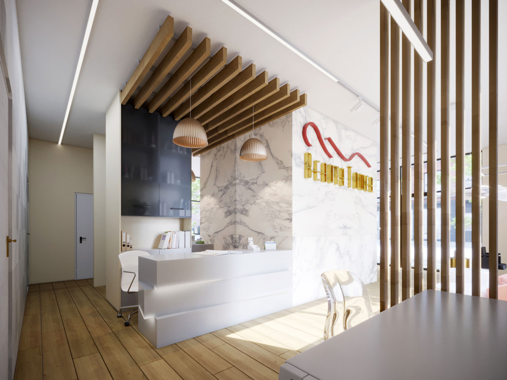
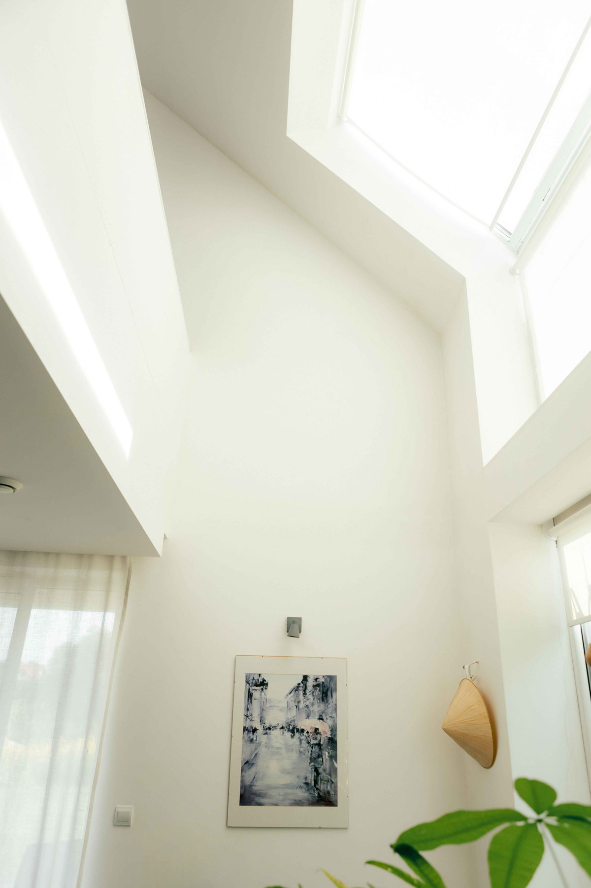
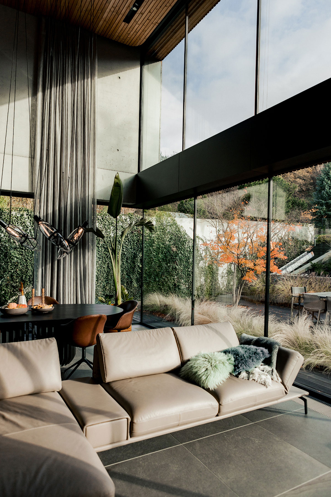
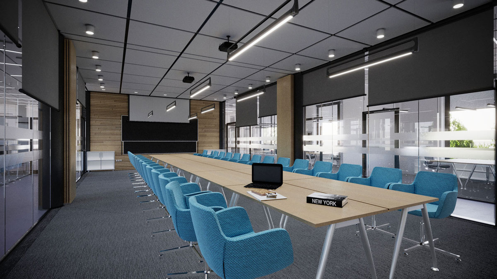

<div class="container center" style="padding-bottom: 20px;">

    <!--: "Gabinet kosmetyczny–Kraków" -->
    <div 
        class="projects-our-story" 
        data-click="project" 
        data-start="2" 
        data-end="8" 
        data-path="../img/wnetrza/Gabinet-kosmetyczny-Kraków/"
        data-state="open"
    >
        <picture>
            <source srcset="../img/wnetrza/Gabinet-kosmetyczny-Kraków/0.webp" type="image/webp">
            
        </picture>
        <div class="projects-our-story__title"><span data-translation="alt-1" >Gabinet kosmetyczny–Kraków</span></div>
    </div>

    <!--: "DOM Z WIORA" -->
    <div 
        class="projects-our-story" 
        data-click="project" 
        data-start="1" 
        data-end="12" 
        data-path="../img/wnetrza/DOM-Z-WIORA/"
        data-state="open"
    >
        <picture>
            <source srcset="../img/wnetrza/DOM-Z-WIORA/0.webp" type="image/webp">
            
        </picture>
        <div class="projects-our-story__title"><span data-translation="alt-2" >DOM Z WIÓRA OSIKOWEGO</span></div>
    </div>

    <!--: "DOM-Z-BETONU" -->
    <div 
        class="projects-our-story" 
        data-click="project" 
        data-start="3" 
        data-end="26" 
        data-path="../img/wnetrza/DOM-Z-BETONU/"
        data-state="open"
    >
        <picture>
            <source srcset="../img/wnetrza/DOM-Z-BETONU/0.webp" type="image/webp">
            
        </picture>
        <div class="projects-our-story__title"><span data-translation="alt-3" >DOM Z BETONU</span></div>
    </div>

    <!--: "UJ Wnetrza" -->
    <div
        class="projects-our-story"
        data-click="project" 
        data-start="1" 
        data-end="5" 
        data-path="../img/wnetrza/UJ-Wnetrza/"
        data-state="open"
    >
        <picture>
            <source srcset="../img/wnetrza/UJ-Wnetrza/0.webp" type="image/webp">
            
        </picture>
        <div class="projects-our-story__title"><span data-translation="alt-4" >UJ Wnetrza</span></div>
    </div>
    
</div>